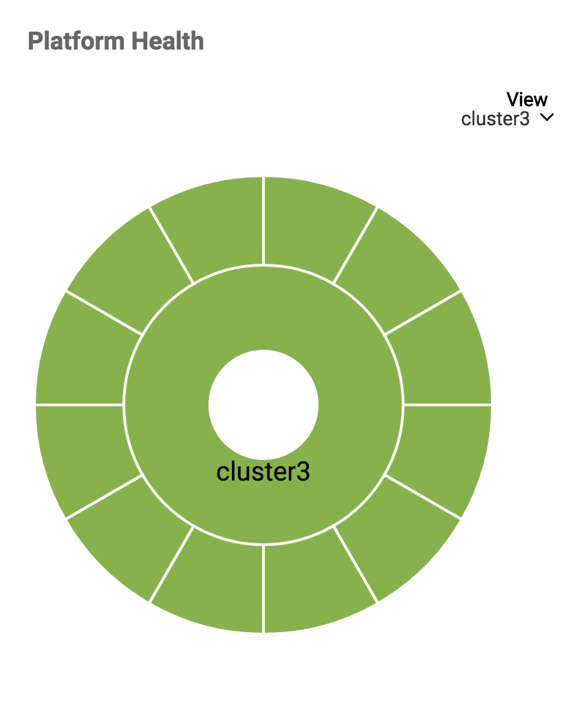
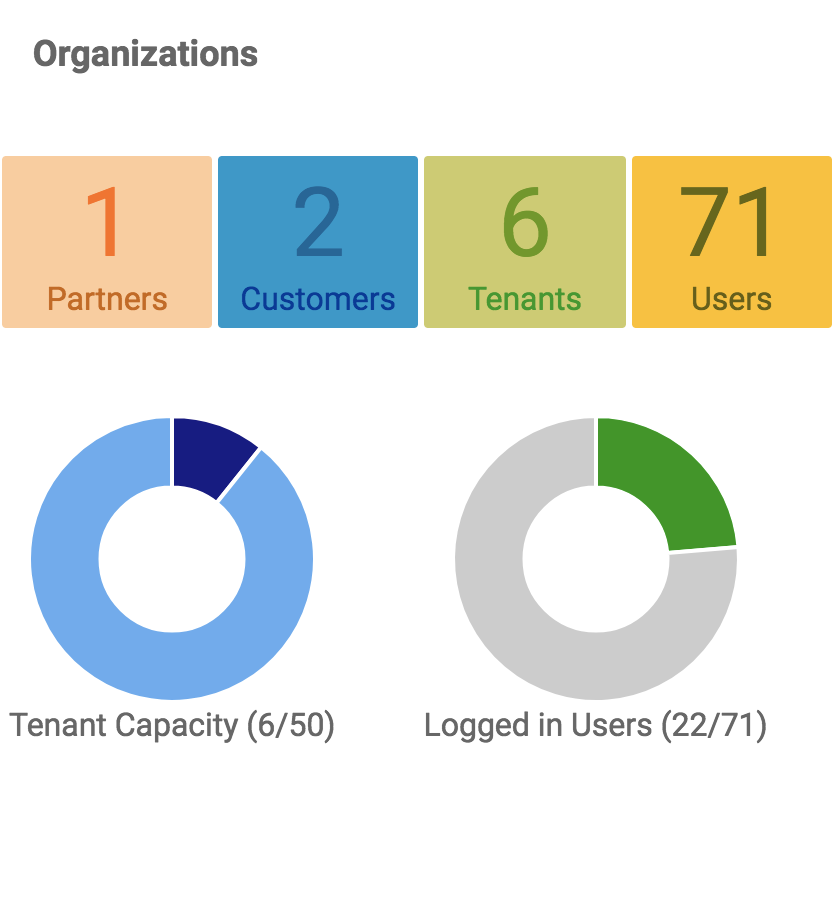
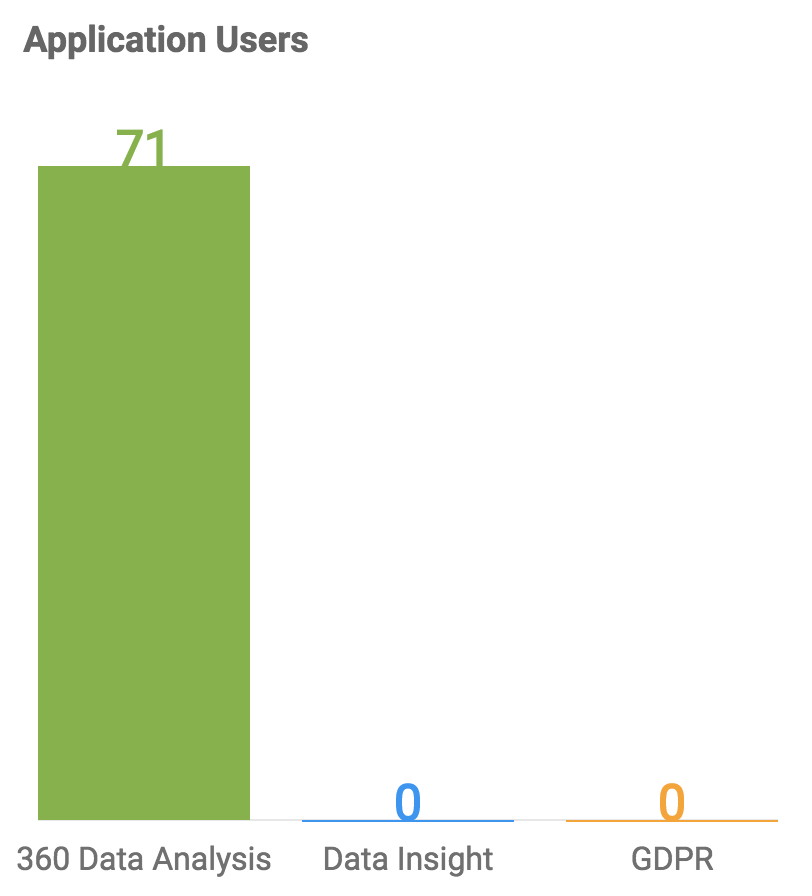
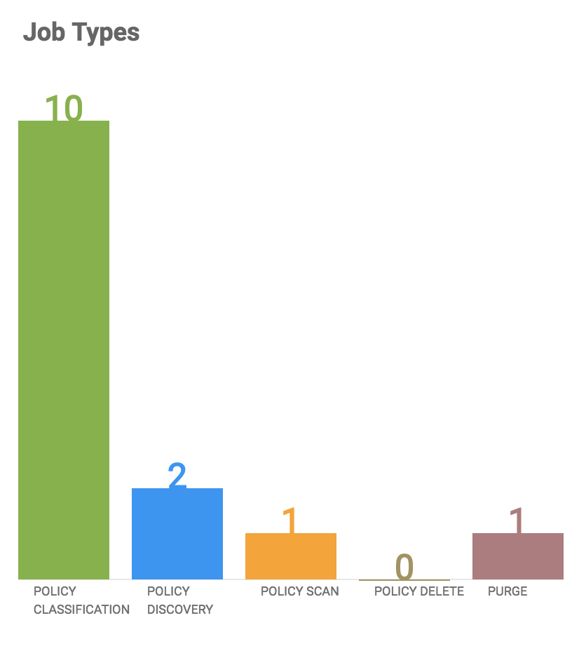
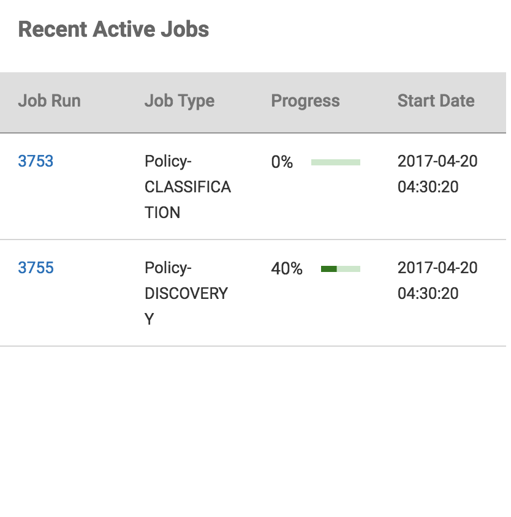
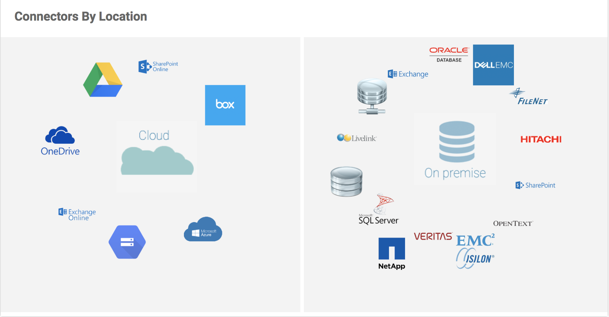
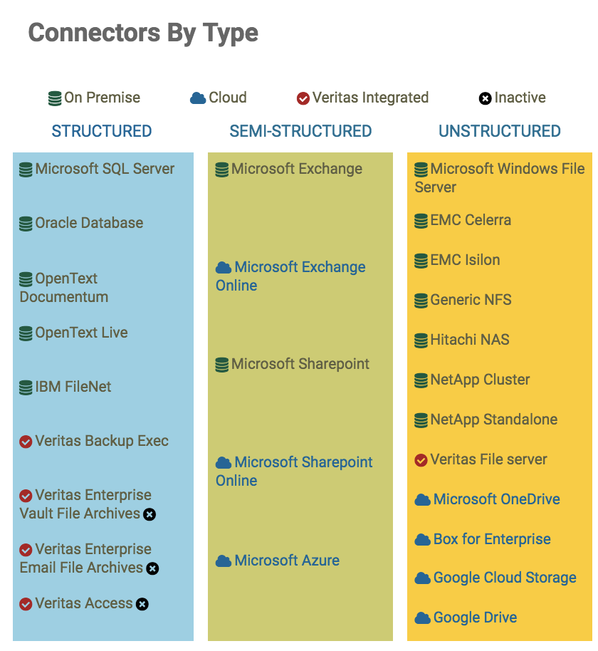
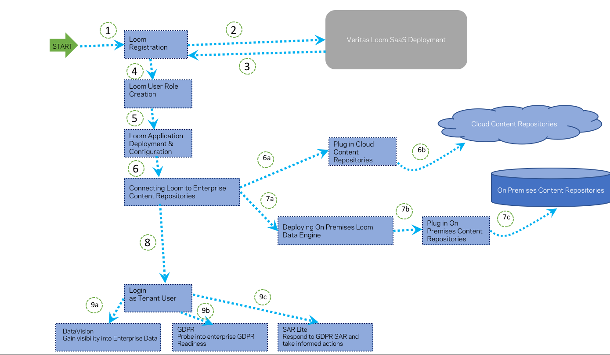

Getting Started Guide¶
What’s New?¶
This page documents production updates to Veritas Loom. You can periodically check this page for announcements about new or updated features, bug fixes, known issues, and deprecated functionality.
The very first release of Loom is called Alpha1. Here is a summary its features:
- Customers can access Loom Platform Services and Loom Applications via a Veritas hosted and managed SaaS deployment on Microsoft Azure cloud infrastructure.
- 360 Data Analysis & Classification is supported for both cloud as well as on-premise content sources.
- Only a few cloud providers are supported in the initial release.
- Refer to latest Loom Release Note for details on which on-premises Data Connectors are supported.
For specifics, refer to Loom Alpha1 Release Notes. You can also refer to Loom Release Notes which contains references to all Loom Release notes for published releases.
Overview¶
This overview is designed to help you understand the overall concepts of Veritas Loom - the Multi Cloud Data Management Platform (MCDMP). The intended audience for this document are the end users who will use Loom through its Dashboard User Interface and Loom Applications such as 360 Data Analysis, GDPR (not available in Alpha1) and others in future.
This Getting Started Guide is meant for quick onboarding of Loom Alpha1 On-boarders. The primary audience are the Tenant Admins and Tenant Users for Loom SaaS Deployment. It covers key Loom concepts, features and benefits. Besides that it highlights Loom components such as Dashboard, Applications, Connection Center, Organizations and Monitoring.
What is Loom?¶
Loom or the Multi-Cloud Enterprise Data Management Platform (MCDMP) enables businesses to control, protect, manage and monetize enterprise information intelligently. It’s a platform to address information governance needs pertaining to unstructured, structured or semi-structured data owned by an enterprise, through a unified information dashboard, irrespective of the location of data: on premise, public, private or hybrid cloud.
Loom, in future, will also expose its functionality through REST APIs SDK. DevOps can use these APIs to quickly create and deploy business workflows and information orchestration applications, that require information from data sources spread across the enterprise, in order to monetize enterprise information assets swiftly.
{kind=link}
Figure: Loom High Level Overview
Why Loom?¶
Loom and its Applications (360 Data Analysis, GDPR, others) together provide a unified, flexible, scalable and extensible data management ecosystem that:
- Brings together all the value that Veritas has to offer to its customers and markets at large.
- Has the ability to access multiple data sources irrespective of where they are: on premise, cloud, or geographically dispersed across the globe.
- Can efficiently classify all enterprise data, no matter where it is.
- Provides ability to control and manage data access and chain of custody for regulatory compliance and information governance.
- Helps consolidate the data preparation for Machine learning Analytics Applications that can tap into enterprise data assets for actionable insights and monetization.
- Provides the core services required to develop new enterprise data management applications or integrate existing applications for data management use cases through RESTful APIs.
Loom vs. Traditional Data Management¶
Loom enables enterprises to transform traditional silos of storage and data management towards comprehensive information management. It helps customers to retain data visibility across different storage environments (cloud, on-premises, hybrid etc.) and ensure security and compliance policies intelligently adapt to the type of environment that data is being stored or accessed from.
{kind=link}
Figure: Loom - Unified Interface for Information Management
Loom brings in value to the enterprises by addressing data and information management needs including data protection. With Loom, businesses can move up the information maturity model and cater to newer opportunities and business demands through orchestration. Traditional data management focus is primarily on data protection whereas Loom helps enterprises evolve towards information governance and monetizing for maximum return on data assets.

Figure: Enterprise Information Management Evolution towards monetizing data
Loom Components¶
Loom components that a user needs to know about. TBD
Placeholder: What are some of the components of Loom that a user needs to know to get started. For example, we could say – Loom comprises of the following components:
- Web based console or Dashboard
- Administration & User Management
- Policy
- Tasks
- Actions
- Applications – GDPR, visibility
- SDK
- Services (?) any that user interacts with
- Other components
What a user can achieve with Loom?¶
You may want to use Loom if you require the ability to address the enterprise challenges with unstructured data including:
- Information Discovery: The need to understand what data you have and why you should keep it, delete it or archive it.
- Information Classification: Identify who has access to your enterprise data - including sensitive or regulated information.
- Information Insights: Find relevant information quickly when there is a business need, investigation, litigation event or GDPR and other compliance regulation audits.
In addition to the above, Loom can do a lot more!
- Provide single sign-on across your information management applications.
- Control of myriad data sources across the enterprise spanning applications deployed using various deployment models: on-premise, hosted SaaS, cloud, bare-metal or VM.
- Simplify development of newer information and data management applications, integration of existing data management solutions.
- Machine Learning based information classification capability
- Advanced information analytics that leverage Veritas storage technologies as an integrated suite
- Tenants and user management for secure, audited information access across the enterprise
- Policy based information access, retrieval, retention
- Others TBD
Loom Usage Workflow¶
Following figure shows a simplified workflow describing how a typical user interacts with Loom.
Steps 1-9 highlighted in the figure refer to the following user actions:
- Deployment
- Loom deployment by Loom Admin (Super Admin). Alpha1 deployment managed as Azure SaaS Offering by Veritas. Future releases will support all deployment models - on premise, cloud, appliance
- Customer Onboarding & Basic Configuration
- Onboarding Customer Organization by Veritas SaaS business partners or MSPs through creation of a Customer Administrator account and a default tenant.
- Addition of Loom users with respective roles as per customer organization policies (Tenant Admin, Data Officers, Security Officers, Compliance Officers) by designated Customer Administrator
- Setting up of various policies according to an organization’s needs and practices by Data, Security and Compliance Officers.
- Connect Content Sources
- Enabling connectivity to organization’s content repositories on premise and in the cloud by Tenant Admin.
- Discovery
- Discover Information and gain knowledge about organization’s data spread across the enterprise landscape and silos. Perform 360 Data Analysis to obtain a comprehensive view of information irrespective of its location, content type, and identify usage pattern, age and other meta data related insights.
- Map of Organization Content Sources
- Obtain a quick overview of organization’s content sources and key metrics associated with who is accessing what information and where within the organization.
- Analysis of Information owned by an Organization
- Use Loom Content Classification Engine and securely schedule and analyze information analysis based on filters and policies set up as per organization’s practices during Loom setup and configuration.
- Analyze Information to gain insights into who owns what data within the organization, where it is located and whether the information is business sensitive or PII or other type. Initiate deeper drill down and information scans based on analysis through Loom workflows.
- Reports
- Use timely notifications, reports and Loom based insights related to organization’s policy breach or compliance issues in order to manage, control and govern enterprise information and make informed decisions.
- Governance
- Implement business decisions to delete, retain (archive) and/or protect your organization’s information assets appropriately.
- Optimize, save costs and improve operational efficiencies by deleting what is not required, retaining what is necessary and protecting critical content source from unauthorized accesses or take timely actions to address breaches if any.
- Monetize Organization Information Assets
- Gain control of your organization’s information assets for not only effective governance but also for monetizing information by building newer data management solutions over Loom platform using the SDK APIs.
{kind=link}
Figure: Loom High Level Usage Workflow
Who should use Loom?¶
Loom can help customers answer the “where,” “who,” and “what” of all their data and identify which data is important and which is redundant, obsolete, or trivial (ROT). With Loom, enterprise Data Officer can identify and control information to answer questions such as: * Is your enterprise information safe? * Do you have control over your data? * Is it possible to defensively delete personal information pertaining to a specific user within your data landscape? * Can you prove it for new information privacy and compliance regulation needs?
Information Officers¶
Built for executives responsible for setting up and enforcing information governance policies within an enterprise, Loom offers a unified interface that spans data storage, data protection and data management functions in a highly available and secure manner. It also provides REST SDK and APIs using which newer information management applications and solutions can be created on top of Loom Platform.
DevOps creating Information Apps¶
By offloading aggregation and integration of data storage and management functions on Loom, developers can not only utilize capabilities offered by Veritas data storage and management products but also bring new applications to market faster, reduce development and operations costs, simplify the FED certification process and future information compliance and governance needs in a secured, scalable and swift way.
Loom Roles & User Personas¶
The figure below shows some of the user personas that interact with Loom.
{kind=link}
Figure: Examples of user personas for Loom Platform
How Loom works?¶
- TBD: How MDCMP works under the covers - before a user can attempt to interact with it via the preliminary steps listed in the next section ‘Interacting with Loom’ let us highlight a few things about how Loom works. Say what all happens under the covers in terms of system component interactions (that a user can understand in context of the use case) so that end user can manage information using Loom. High level mechanics that the user needs to know. This will not cover the engineering details unless specifically required. (Check with Platform team, Apps team, others?)
As an example, refer to this link - we need to show something at this level of abstraction to explain how Loom works - we need not go into architectural details here. https://onetrust.com
For example: Loom works across enterprise data silos - on-premise, cloud or hybrid.
Figure: Placeholder figure to show something similar - this one is an example from onetrust
Interacting with Loom¶
This section covers the user interface components of Veritas Loom Product. Loom Application developers can interact with Loom via REST APIs.
The target audience of this guide include Loom Platform Admin, Loom Tenant Admin and Loom Tenant Users.
It gives a quick overview of how these users typically interact with Loom User Interface for performing various Loom administration, monitoring or data management actions such as gaining visibility into enterprise content repositories, running data scans or classification jobs, obtaining insights that can help govern, optimize, mitigate risk and analyze enterprise data footprint for ROT.
Note
Loom Alpha2 Release supports only DataVision Application deployed as part of Azure SaaS based Loom deployment.
Loom comprises core Loom Platform Services and Loom Applications such as InfoMap, DataVision, GDPR Readiness, SAR Lite.
You can interact with Loom either via its user interface or through REST APIs. This section focuses on the Loom Platform User Interface. For REST APIs refer to Loom Platform SDK API Guide. Details of Loom Applications are available in specific Loom Application User Guides: DataVision App User Guide.
The Loom User Inteface helps with the following:
- Managing the Loom Platform
- Setting up Loom Access for Tenant Admins and Tenant Users
- Establishing Loom Policies for enterprise data scan
- Discovery and visualization
Each Loom deployment comes with a default Loom UI component.
This section describes:
- Interaction with the Loom product.
- Key Loom UI Paradigms.
- The Loom Dashboard.
- Navigation across different user applications deployed along with Loom through the Application Manager User Interface.
This section also highlights Loom Administration actions such as:
- User Management
- Administering Multi Tenancy aspects
- Securing access with keys
You will also find how to: * Connect various data sources to gain visibility into enterprise data assets and classify them based on policies.
- Set up, create, and publish enterprise wide data access policies.
- Schedule jobs for data classification, policy enforcement, troubleshooting.
- Monitor health of a specific Loom deployment instance.
Loom UI¶
Once the Loom UI is launched, you are directed to the login page as shown below.
{kind=link}
Figure: Loom Login
After providing valid credentials the Loom UI is shown which can be divided into the following sections:
Title Bar¶
The Title bar appears on the top of the Dashboard. Besides the product logo and name it provides link to Help Topics and Logout options. It also provides option to change or update the user password.
{kind=link}
Figure: Changing User Password
{kind=link}
Main Display¶
On the right hand side of the navigation bar, you can see the main display area. Depending upon the user privilege and context set via the navigation bar - it can display various kinds of information and results of user actions.
{kind=link}
Figure: Main Display Area Showing Context Sensitive Information
TBD - Following content needs to be updated in Beta docs.
- How to begin using the basic interface and what actions can be performed by various Loom Loom Roles.
Loom Dashboard¶
Once you log into Loom, you can see the main Loom Dashboard. The control center of Loom is its Dashboard. You can monitor, manage, and gain insights from the enterprise content repositories. If you have an administrative role, you can create and manage user accounts and access rights based on enterprise policies. Based on your user persona, the Loom Dashboard offers varying controls. For example, a Loom User may not be able to see the content sources or manage them. However a Loom Platform Admin or Tenant Admin may have access to those features.
- Summary Bar
- Asset Map
- Widgets
- Loom Health Dashboard
- Organizations
- Loom Applications
- Application Chooser or Application Switcher
- Loom Sidebar
- Multi Tenancy
- Role Based Access Control
- Access Management
- Setting up Loom Credentials
- Data Plane Orchestration
- Connector Framework
- Loom Data Sources
- Application Management
- Policy Management
- Data Management Job Scheduling
- Audit Logging
- Troubleshooting Loom User Interface
- Error Messages
- Related Information
Summary Bar¶
The summary bar shows the number of jobs, content sources, users, tenants, applications, or connectors based on the logged-on user role.
{kind=link}
Figure: Dashboard Summary Bar
The table below shows details each type of user role can view in the summary bar.
As a… You can view the number of… Content Sources Jobs Users Tenants Applications Connectors Platform Admin N N Y Y Y Y Partner Admin N N Y Y Y Y Customer Admin N N N N Y Y Tenant Admin N N Y Y N N Tenant User N N N N N N
Asset Map¶
The Asset Map shows the locations of Control Plane, Data Engine (Cloud/On Premise), or Content Sources by marking them on the world map. You can filter the markers on the map by selecting a type of asset from the right-side panel. You can zoom-in, zoom-out, or reset the map using the controls in the bottom-left corner of the Asset Map.
{kind=link}
Figure: Dashboard Asset Map
The table below describes the details seen in the map based on the logged-on user role.
As a… You can view the counts and the locations of… Control Plane OnPrem Data Engine Cloud Data Engine Content Sources Platform Admin Y Y Y N Partner Admin Y N N N Customer Admin Y N N N Tenant Admin Y Y Y Y Tenant User N N N N
Widgets¶
Below the Asset Map in the Dashboard, you can see a set of widgets based on the role you have logged-on as.
- Platform Health: The chart shows the health of each Data Engine. The inner pie shows the overall aggregated health of the Data Engine and the outer pie shows the health of each service in the Data Engine.
Figure: Platform Health
- Organization: The summary bar on the top shows the total number of Partners, Customers, Tenants and Users in the deployment. The pie charts below show the Tenant capacity (number of tenants onboarded) and the number of logged in users.
Figure: Organization
- Application Users: The bar chart shows the number of users by application type usage on the system.
Figure: Application Users
- Job Types: The bar chart shows the total number of jobs by the type of job created in the system.
Figure: Job Types
- Recent Active Jobs: The table shows the details of the recent jobs in active state.
Figure: Recent Active Jobs
- Connectors by Location: The widget shows the various connectors supported grouped by location(on-premise or cloud).
Figure: Connectors By Location
- Connectors by Type: The widget shows the list of connectors grouped by type(structured, semi-structured and unstructured)
Figure: Connectors By Type
- The table below shows the widgets each type of user can see.
As a… You can view the counts and the locations of… Platform Health Organizations Application Users Job Types Recent Active Jobs Connectors by Type Connectors by Location Platform Admin Y Y Y N N Y Y Partner Admin Y Y Y N N Y Y Customer Admin N N N N N Y Y Tenant Admin Y N N Y Y Y Y Tenant User N N N N N N N
{kind=link}
{kind=link}
{kind=link}
{kind=link}
{kind=link}
{kind=link}
{kind=link}
Loom Health Dashboard¶
Following figure shows a representative image highlighting the health statistics of a typical Loom deployment. This view is available to Partner and Tenant Admin (only? Check with UI dev and Loom Architects - TBD)
{kind=link}
Figure: Loom Health Dashboard
It shows metrics related to Loom Infrastructure and Loom Services. The Infrastructure Tab shows the following metrics:
- Status of Kubernetes Cluster
- Operating System used
- OS Version
- IP of the Loom Deployment
- Compute resources usage details and charts: CPU, Memory, Disk I/O
- Pictorial representation of Loom Infrastructure
The Services tab shows… (TBD)
Organizations¶
This section needs to be updated for Loom UI Navigation panel entry titled ‘Organizations’. We need to highlight what an organization means in Loom context. Is this entry viewable by only Platform Admin, Partner Admin or can this also be viewed by Tenant Admin? This needs to be highlighted.
Any other Loom User actions related to Loom Usage or configuration needs to be explained as well.
TBD - Need Ninad’s help in filling in more insights about what shows up when a user clicks on Organization , what the Admin is supposed to do with the information shown against Organizations, actions - such as add/delete/modify organizations etc.
For a conceptual definition of what Organization means in Loom context - see Loom Organizations.

Figure: Loom Organizations Navigation
Loom Applications¶
Besides the Loom UI, which is an in-built application, there may be additional Loom Applications deployed within an enterprise. Visibility & Classification is one such application. The other is GDPR Application. These applications help to render your unstructured data in visual context and guides you towards unbiased, information-governance decision-making. These additional applications show up in the top part of Application Switcher or Application Chooser. For details on their user interface and how to use these applications, refer to their respective user guides.
For details refer to the App specific User Guides Loom App User Guides
{kind=link}
Figure: Loom Application Interface shows applications deployed on Loom Platform
Application Chooser or Application Switcher¶
{kind=link}
Figure: Loom UI Application Chooser or Switcher
Application Chooser or Switcher is a Loom UI component that facilitates navigating between the Loom itself and various applications that are deployed on it. Refer to the figure depicting Application Chooser above that shows a list of applications installed on top, followed by the pages on the Loom UI and recent links the user has visited. The Application Chooser is presented as a sidebar that floats in the same space used by the maximized side navigation area in Loom UI.
Loom Sidebar¶
{kind=link}
Figure: Loom UI Sidebar
The side navigation is a framework for displaying components within the sidebar area. Implementors can build their own components and/or configure and utilizes the provided components for displaying a formatted hierarchy of links within an application. The components are displayed in a column (displayed using css flex) in the configured order. The sidebar can be in a maximized (300px wide) or minimized (60px wide) state.
Multi Tenancy¶
Multi-tenancy means that a single instance of the Loom software and all of the supporting infrastructure serves multiple customers. Veritas Loom architecture is geared for multi-tenancy, high availability and scale. Data Protection and secure data access is supported at all levels within the Loom service ecosystem.
The Alpha2 version of Loom supports Cloud-based deployment (Azure) only. Multi-tenancy in this case refers to a SaaS deployment of Loom that can be configured and setup to be used by multiple tenants. Each tenant has access to only the Loom resources and data that belongs to them.
Role Based Access Control¶
Loom supports multi-tenancy. What this means is if there are several customers using the same Loom deployment, their data is secure and not-visible to any other tenant. In terms of performance and SLAs too, the Loom architecture is built ground up to ensure multiple tenants can co-exist and the entire system can be scaled easily through its micro-services and container models.
Loom users can have different types of roles. For details refer to Loom Roles section in Loom Concepts and Usage Guide. Depending upon their assigned role, Loom users can perform various actions listed here
Access Management¶
About the Loom User Roles¶
Roles specify access privileges to the Loom platform and its applications. Roles control who has access to your data on the Loom platform and the level of access they have. Loom supports multi-tenancy. This means one tenant cannot view the data of other tenants. The Loom platform allows access to users only on a need-to-know basis. For example, platform admin users cannot view or manage customer or tenant level users.
The Loom platform provides five types of user roles:
- Loom Admin
- Partner Admin
- Customer Admin
- Tenant Admin
- Tenant User
Depending on the kind of Loom deployment, one or more roles may not be available. For example, in case of Loom Alpha2, only Azure based Loom SaaS deployment is supported. In this case, only Customer Admin, Tenant Admin and Tenant User roles exist.
The Loom administration role is split into several entities as appropriate for a deployment type and enterprise requirements for information management. In case of Cloud based SaaS deployment (for e.g. Azure), Veritas or its Partner would set up the SaaS infrastructure to deploy and bootstrap core components of Loom. This role is referred to as Loom Admin. A Loom admin may also have a partner admin if the SaaS provider is adding more customers instead of going via other partners. The Customer Admin role represents an organization or enterprise. This role is tasked with creation and deletion of tenants, Tenant Admins, and Tenant Users.
The Tenant Administrators are in charge of bringing up their organization specific on-premises Data Engines. These Data Engines are set up to use the Veritas Data Connector framework that binds various enterprise data sources (CIFS, NFS, Box, others ) to the Loom deployment in the context of an organization and enables the end users to access, visualize and govern enterprise data assets. The Tenant Admin could further delegate the Data Source bindings to a Storage or IT Admin within their organizations by creating additional users with Tenant Admin privileges. Besides the Storage, the Tenant Admin also manage the Loom Applications such as 360 Data Analysis, GDPR (not available in Alpha1) and others that are deployed as part of Loom subscription. The Tenant Admin is entrusted with creation and deletion of Tenant user accounts for their organization and setting up policies related to data access, classification and visibility which are applicable enterprise wide.
Loom Admin¶
Special Loom user privilege, the very first Loom user responsible for deploying, setting up and administrating Loom instance. Loom Admin has privileges for creating Partner Administrators and deleting them when required.
Partner Admin¶
This roles supports Veritas Partners that may want to onboard several tenants on the Loom deployment. For example, a MSP or Cloud Provider could be a Veritas Partner. A Partner Admin can create one or more Tenant Admin users as needed.
Customer Admin¶
As part of Loom trial subscription, each organization gets its own Loom Account which has Customer Admin privileges. This role is assigned with user management for the enterprise. Customer Admins can create Tenant Admins for two key functions - Tenant User Management and to deploy organization specific Loom Applications. Not all organizations may use the same set of applications.
Tenant Admin¶
Delegated, specialized role, created by Customer Admin during the initial stages of onboarding Loom. It has privileges to create Tenant users and perform other administrator tasks in the context of a Tenant such as IT or Storage administrator who binds enterprise data assets to the Loom Data Plane through credential/ access rights. The Tenant Admin can create end users for only their organization. Another function performed by Tenant Admin is defining and setting up enterprise / customer policies for data scans, classification, access and regulatory compliance. This feature may not be fully supported in Loom Alpha1 release.
Tenant Users¶
These are typical Loom end user accounts belonging to a particular organization that are responsible for enterprise information governance. These users will carry out various tasks on the system including monitoring enterprise data assets, exporting required data out of Loom for conducting legal inquiry, retrieving data access or data trail reports, and so on.
Role Privileges of Loom Users¶
Depending upon their assigned role, Loom Admin users can add or assign other roles as well as perform various actions summarized in the following two tables. For example, a Loom Admin can add other Partner Admins, Customer Admin, and Tenant Admin roles. However, a Customer Admin can only add other Tenant Admins and Tenant Users.
| As a… | You can create… | ||||
| Platform Admin | Partner Admin | Customer Admin | Tenant Admin | Tenant User | |
| Platform Admin | ✕ | ✔ | ✔ | ✕ | ✕ |
| Partner Admin | ✕ | ✔ | ✔ | ? | ? |
| Customer Admin | ✕ | ✕ | ✔ | ✔ | ✔ |
| Tenant Admin | ✕ | ✕ | ✕ | ✔ | ✔ |
| Tenant User | ✕ | ✕ | ✕ | ✕ | ✕ |
| User Management Action | Loom Role |
| Loom Deployment (not supported in Alpha1 Release) | Loom Admin |
| Managed Loom Deployment (Alpha1 not supported) | Partner Admin |
| Creation of Customer Admin for each tenant Organization | Loom Admin, Partner Admin |
| Creation of Tenant Admin for user management within an enterprise for Loom usage | Customer Admin |
| Creation of tenant users (end users) for the Organization | Tenant Admin |
| Setting up of on-premise Data Engine to plug in enterprise on-premise data sources through the Loom Connector Framework component | Tenant Admin |
| Deploying organization specific Loom Applications for data analysis and governance | Tenant Admin |
| Setting up organization specific policies for data access, classification scans, filtering etc. | Tenant Admin |
| Login and use Loom Dashboard and other data analysis features for information governance | Tenant Users |
Granting Access to Loom Users¶
You can create users with roles based on your role in the hierarchical order. For example, a Platform Admin can add a Partner Admin or a Customer Admin or a Customer admin can only add a Tenant Admin.
The procedure for adding admin/user and assigning a role remains the same, except for the role of the logged-on user assigning the role.
To add a user¶
In the navigation pane on the left, click Organisations > Users.
In the Users pane, select Partner Admin or Customer Admin or Tenant Admin, or Tenant User.
Note
The roles available for assignment depend on role of the logged-on user.
- Click Add to open the Add User dialog box.
- Enter a First Name, Last Name, and Email Id* in the respective fields.
- From the Role drop-down, select a role (Partner Admin or Customer Admin or Tenant Admin or Tenant User), then click Save to save and add the user details.
Adding a Customer Account¶
Note
You must be logged on as Partner Admin to add customer accounts.
To add a customer account¶
Access Organizations > Customers from the navigation pane on the left to add customers.
Click Add to open the Add Customer Account dialog box.
Enter the following details for the new customer account. * Account Name * Billing ID
Enter the following details for the administrator. * First Name * Last Name * Email
Note
The Tenant Name is populated by default based on the entry in the First Name field.
Click Next.
Turn on the applications for the current customer account using the toggle button.
Note
For Alpha2, 360 Data Analysis is the only available application and is selected by default.
Click Save to save the newly created customer account.
The newly created customer administrator receives an email to update the password for logging into Loom as the Customer Admin.
{kind=link}
Figure: Adding a Loom Customer
{kind=link}
Figure: Selecting a Loom Application
{kind=link}
Figure: New customer creation notification
Loom Tenant Management¶
This section describes how the Customer Admin can add, delete or modify Loom Tenants
Note
You must be logged on as Customer Admin to add and delete tenants and users.
To add tenants¶
- Access Organizations > Tenants from the navigation pane on the left to add tenants.
- Click Add to open the Add Tenant Account dialog box.
- Enter the following details for the new tenant account. * Account Name * Billing ID
- Enter the following details for the administrator. * First Name * Last Name * Email
- Click Save.
The newly created tenant administrator receives an email to update the password for logging into Loom as the Tenant Admin.
{kind=link}
Figure: Adding a new tenant
{kind=link}
Setting up Loom Credentials¶
This section is TBD. It is meant to contain details on the initial steps for Loom onboarding - the process, obtaining credentials etc.
Data Plane Orchestration¶
Loom utilizes a Control Plane and Data Plane architecture for scalability and performance. For details, refer to the Concept of Planes in the Loom: Concepts & Glossary Guide.
By default, Loom brings up its Control Plane as part of the initial bootstrapping process. There is no customer or tenant specific Data Plane defined. Once the Tenant Admin account is created, each tenant needs to orchestrate their Data Plane to complete the necessary plumbing required to connect up their proprietary data sources for scanning, classification and other information governance activities.
This section lists the steps required to orchestrate the Data Plane:
Prerequisite:
- Tenant Admin account is active
- Loom Control Plane is up and running (how to verify this in Dashboard? State details)
Bootstrapping the Data Plane - Each Tenant needs to figure out where to deploy the data plane - on cloud or on premise. In the first release, Loom supports Azure based Data Plane deployment model only.
Steps on how to bootstrap / orchestrate Data Plane by a Tenant Admin
# Step1 # Step2 # Step More here…
Content-TBD
Connector Framework¶
This section will list steps required to be performed by IT DevOps Storage Admin or the Tenant Admin to set up the Data Source Connector framework. (Can’t all this plumbing be done by default and user asked for whatever credentials/cloud provider specific / organization access rights related inputs?)
We also need to provide a list of supported Data Sources (based on CCF capability list)
Application Management¶
This section will list various Loom Application Management Actions performed by the Loom Admin, Partner Admin and the Tenant Admin.
Loom comes in-built with UI Application. Besides that there are two additional Applications that can be deployed by the Admin. These are:
- 360 Data Analytics
- GDPR Application
These Loom Applications can be deployed, upgraded or deleted (in case of optional or 3rd party applications). Note that Loom UI is available by default in all Loom deployments.
Following are some of the actions related to Loom Application Management that can be performed by Admin personas.
- Installation of Loom Applications
- Upgrading Loom Application
- Uninstalling Loom Application
- Rollback
Currently, only Installation of Loom Application is supported via Platform UI.
Installing a new Loom Application¶
Loom Platform Admin role is allowed to deploy a new Loom application on the Platform. It involves uploading a tar and zipped Application binary file. Platform UI shows the status of the file upload. UI and screenshots TBD.
In this section, we need to provide steps required to complete this action along with screen shots.
Also, we need to describe what is contained in this Application binary tgz file - complete application deployment code along with the helm charts and application-info.json.
Policy Management¶
This section addresses how Loom Customers can utilize Loom Policy Feature to create enterprise policies for various business functions such as gaining visibility into enterprise wide data assets, data scan policies, data access policies and more.
Overview of Loom Policies¶
Loom platform hosts Veritas or third-party applications which provide different capabilities, such as discovery, scan, and classification of an organization’s cloud and on-premises content sources (connectors). The Loom Policy Manager provides you a framework to create policies to help you control the behavior of an application. A policy is a collection of conditions or rules that determine the scope of the policy. A policy can specify the inclusion or exclusion rules for connectors and rules that determine the filters to be applied for before the application can execute any action. For example, you may create a policy that applies to the Box for Enterprise connector, with a rule to include or exclude all PDF files owned by users in Group A. By default, a policy applies to all configured connectors.
When an application is installed on the Loom platform, it can register its own policy types representing supported actions, connectors, and assets. Applications can also provide some pre-defined policies to the policy framework. One of these pre-defined policies can be marked as default. A default policy has a default schedule and asset type. If the asset corresponding to this type gets added in the system, default policy is automatically applied.
For example:
| Policy Type | Associated with Data Asset Type |
|---|---|
| Discovery | Infrastructure Assets |
| Scan | Information Container such as file shares, folders |
| Classification | Information Containers and files |
The policy framework is tenant aware and the configured policies apply to applications subscribed to by the specific tenant. The policy framework allows you to create, edit, and publish a policy.
When an application is installed on the Loom platform, it dynamically adds the type of policies it can support and some pre-defined policies corresponding to the type. Thus, with every new application, new capabilities are added to the platform along with the policies.
You can author, publish and monitor all configured policies from the Policies dashboard on the Loom Platform user interface.
{kind=link}
Figure: Loom Policy Dashboard
Creating a New Loom Policy¶
The Loom Policy Framework allows you to create metadata management policies to enable Data Discovery, Data Scan, and Data Classification functions. Every policy defines a set of rules that govern the behavior of a Loom Application, deployed on Loom Platform, in terms of how each Loom Application can execute specific actions. You can configure multiple rules within a policy and apply them in the context of selected Loom Data Connectors.
To Create a New Policy¶
In the Policies pane, click New Policy.
Note: Alternatively, click Actions and select New Policy from the Actions drop-down.
Enter a Policy Name and Policy Description in the respective fields.
From the Policy type drop-down menu, select Discover, Scan, or Classify, as the case may be.
Now choose the connectors to apply the policy rules to. All configured connectors are displayed.
Click Select All to choose all connectors.
In the Add Policy Rules pane, create rule sets that define the application behavior for discovering, scanning, or classifying the configured connectors.
You can either create new rules for the policy or select rules from an existing (already configured) policy. Click the Choose rules from an existing policy drop-down to select a pre-configured rule.
To create a new rule, do the following:
- Select whether you want to create an inclusion or exclusion rule. Refer to Loom Policy Rule Sets for more details.
- Select whether the condition applies to a pattern, file, or folder.
- Click Apply rules to selected connectors.
Click Save Policy to save the configured policy or click Cancel.
Note
Note that the created policy remains inactive and is not applied till it is published. Publishing a policy binds it to a schedule and triggers a Loom Job to apply the policy rules to the selected Loom Data Connectors.
Viewing Loom Policies¶
Use the Policies page to review the policies definitions, publish inactive policies, and filter them based on various attributes, for example, by policy state, by application, by owner, and so on.
To View the Loom Policies¶
- In the navigation pane on the left, click Policies. The following figure shows the Policies page details.
- In the top pane of the Policies page, click View Columns to select or remove the columns you want to view.
- To view Policy details, click on a Policy ID. The Policy details are displayed on the right.
{kind=link}
Figure: Viewing Loom Policy Details
The Policy Details pane displays the following Loom Policy attributes:
- Policy ID - Unique identifier for each policy
- State - Active or Inactive Policy
- Application context for which the policy is created
- Policy Type(s)
- The list of Loom Data Connectors to which the policy is applied.
- Rules Summary - indicating rule sets for inclusion or exclusion.
- Owner - The Tenant User who has created the policy.
The policy details differ for active and inactive policies. An active policy includes Published Jobs along with Policy Details.
{kind=link}
Figure: Viewing Loom Policies Published Jobs Tab
Next of the Policy Details tab, if you click on the Published Jobs tab, you can see the following information:
- Job name
- Asset(s)
You can also filter the listed policies by their state or by the type of the policy. For example, you may be interested in all active scan policies. Use the drop-down at the top of the list page to select the filters.
Managing Loom Policy¶
A policy is just a definition of the rules that applications can use when executing actions on connectors. Creating a policy does not automatically trigger any action for applying these rules. To trigger any action, you must bind the policy instance to a schedule. This binding operation is also referred to as publishing a policy. When you publish a policy, a job is created as per schedule ( or immediately, if there is no schedule is defined). This job is picked up by an application for execution.
Additionally, you can also edit, copy (clone), or delete an existing policy.
Publishing Loom Policy¶
Note: Only policies that are in inactive state can be published.
- To the left of the Loom platform UI, click Policies.
- Select an inactive policy on the Policies list page.
- From the Actions drop-down menu, select Publish.
- On the Publish page, select the Assets from the assets list filtered by Asset Types. For example, Infrastructure Assets type or Information Assets (based on Policy Type).
- Choose a frequency and start time for evaluating the policy rules.
- Add notifications if required in the Notifications pane.
- Click Publish and Close or Publish and Notify to publish the policy.
{kind=link}
Figure: Publish a Loom Policy
Editing Loom Policy¶
You can edit an existing Loom Policy. If you edit an active policy, then the changes only apply to those jobs that are created new after the policy change. All the policies that were published prior to this change will continue as per the previous policy setting. This applies to all the jobs that began before this policy change and have not yet reached the completed state.
- To the left of the Loom platform UI, click Policies.
- Select a policy in the Policies pane.
- From the Actions drop-down, and select Edit.
- Edit required fields, for example, the rule sets or the connectors types to which the policy is applicable.
Cloning Loom Policy¶
You can clone an existing policy and edit specific parameters to quickly create a newer policy as per enterprise requirements.
- Select a policy in the Policies pane.
- From the Actions drop-down, and select Clone.
Deleting Loom Policy¶
You can choose to delete single or multiple policies.
- Select a policy in the Policies pane.
- From the Actions drop-down, and select Delete.
- Click Confirm.
If the deleted policy is inactive (not published), it will no longer be visible on the Polices list page. If the deleted policy is active, the delete action will first delete the related job. Only after the jobs are deleted, the policy is deleted.
Audit Logging¶
Audit logging is a critial functionality of Loom Core Platform which deals with business critial and sensitive customer data. Logging information like what was the data access event, which user, system, application, launched the event and the timestamp when it occurred can provide useful information to system administrators when needed.
Loom allows the Platform Admin to facilitate audit logging of key Loom events triggered by human user or systems and save it with relevant details so that a Loom customer, Platform, & Partner administrators can use it for auditing or analysis.
Loom Audit Logging: Key Capabilities¶
- Robust framework to facilitate system wide audit logging
- Easy availability of logs to authorized users
- Meet compliance requirements
Loom Audit Logging: Key Features¶
- Easy to integrate interfaces for all platform components & applications
- REST API & Java SDK
- Lightweight, no performance impact on consumer or the platform
- Support for archival and purge of logging data to meet compliance
- Support for efficient query of audit logs by different keys
- Data Security - Partitioned customer data, Policy based access to authorized users only
About Audit Logs¶
The Loom platform consists of various services on both, the Control Plane and the Data Engine layer. Every action carried out on the Loom platform logs data using the Audit-logs services. You can use the Audit Logs dashboard to view and access all the audit logs applicable to the role that you have logged in as.
{kind=link}
Figure: Loom Audit Log Dashboard
The Audit Logs user interface is available on the Loom Platform for all the Admin roles. In the left navigation pane of Loom Dashboard, click Audit Logs to view audit logs specific to your Loom Roles.
| Loom Admin Role | Category of Audit Logs Accessible to this role |
| Platform Admin | All the Loom events generated in the system. |
| Partner Admin | All the Loom events generated by Customer Admin users. |
| Customer Admin | All the events generated by Tenant Admin users. |
| Tenant Admin | All the events generated by users created by this Tenant Admin for a customer account. |
The Audit Logs dashboard provides various filters. Use predefined filters to filter the audit logs by various categories such as by origin, event type, start date and end date. If you select more than one category, the filter conditions are applied using the logical operator AND. For example, if you select the Origin as Loom Platform and the Event Type as User Management > Create, a list of all events where a user has been added to the platform configuration are displayed.
The following table lists the supported filters:
| Filter | Purpose |
| Application | The Application under which an event originates. For example, Loom Platform and 360 Data Analysis |
| Event Type | The service that is triggering an event; you can enter Create or Update to trigger an event. The event types in the Audit Logs dashboard include:
The actions triggered for all the following event types include Create, Update, and Delete
|
| Owner | The user who initiates an action that results in an event |
| Origin | The back-end service that triggers an event; for example, cluster-manager, policy-admin |
| Start Date | Filter logs from timestamp in “yyyy-MM-dd HH:mm:ssZ” format |
| End Date | Filter logs till timestamp in “yyyy-MM-dd HH:mm:ssZ” format |
| Date | Timestamp of an event in “yyyy-MM-dd HH:mm:ssZ” format |
| Event Result | Status of an event; for example, success, failure |
Troubleshooting with Loom Audit Logs¶
TBD - This section does not have any content as of Alpha2 - we are working on populating this.
Troubleshooting Loom User Interface¶
TBD - This section will cover commonly known Loom User Interface related issues, troubleshooting tips and workarounds. Provide reference here to Loom Application User Guides for Application Specific Troubleshooting.
Error Messages¶
For all Loom Dashboard error messages, refer to Dashboard Troubleshooting Guide
This section lists some of the common actions performed by a typical user once the Loom is deployed, bootstrapped and configured to use enterprise data sources.
How to do view all connected Enterprise Data Sources?¶
Note: Update this section with screen by screen help / info Refer to Jira 1693
Screen Shot step by step¶
- Basic User Actions: Content-TBD Describe the screenshot in the context of viewing connected data sources and how to filter, slice & dice the view to obtain insights.
Content-TBD
Loom Workflows¶
There are two kinds of Loom Users depending upon their means of interaction with Loom deployment.
- Loom UI Users: Platform Admin, Tenant Admin, Tenant User
- Loom Application Developers
This section lists all the Loom Usage Workflows for interacting with Loom Platform and deployed application ecosystem. The following information is useful for both kinds fo Loom Users and can help them understand the high level steps required to carry out the following tasks:
- Data Governance
- Registering a new Customer to access Loom deployment
- How to set up Loom Tenant Admin and Tenant User Accounts?
- Configuration and definition of Loom Policies for Information access, management and analytics
- Deploying Loom Applicationsa
- Identify PII data within the enterprise data landscape
- Set up policies to manage and comply with personal data and other regulations
- Data Optimization
- How connect various enterprise content repositories and discover information assets
- How to scan and classify enterprise data using Loom?
- Visualizing and understanding data location, how many copies, who is accessing what information?
- Risk Mitigation
- Monitoring enterprise information assets with Loom
- Identifying data access breaches
- Figuring out vulnerabilities in information asset access via audit logs and tracking logs
- Data Analytics
- Locate ROT data and delete it
- Identify which data can be moved to cloud
- various actions such as setting up of Loom Roles, Accounts, setting up of Loom ddPolicies for enterprise data discovery, scan and visualization features and many more.
Warning
For alpha2, we have a skeleton of documentation ready outlining typical workflows that an early Loom adopter may need help with. This document needs to be updated with high quality block diagrams that highlight key steps in each workflow. In certain sub-sections, links need to be updated corresponding to the appropriate reference section in other users guides that are currently being developed, for example - the Loom Application User Guides or certain sections in Getting Started Guide itself such as Loom Dashboard, screen details etc.
Loom Access Workflows¶
How can an enterprise or organization obtain Loom trial access credentials?
Loom Alpha1 release is available only as a Veritas managed SaaS deployment. Customer organizations can onboard Loom via the registration process that requires filling out a form, providing some organization specific Loom usage information and obtaining a customer account. For details refer to Loom Registration Process.
TBD - add a picture of the Loom registration form or link to it if available online.
How can you reset Loom password if you forget it?
TBD
Loom Deployment Workflows¶
What is a typical high level Loom deployment and usage workflow?
Veritas Loom offering comprises of Loom Platform and Loom Applications such as DataVision, GDPR Readiness and GDPR SAR Lite. It can connect to and scan, classify and analyze structured as well as unstructured content repositories irrespective of whether they are located on premises or in the cloud. Loom Platform and its applications can themselves be deployed either in the cloud or on premises. In future releases, Loom can also be deployed in an appliance form factor on premises within an enterprise. The initial release of Loom is available to early adopters as a Microsoft Azure deployed SaaS offering. Early adopters who would like to check out Loom to gain visibility into their cloud based content repositories simply need a Loom account to get started. However, if they would like to scan, classify and analyze any of their on premises content repositories, they need to deploy additional Loom component called Loom On-Premises Data Engine and configure it to talk to their on premises content repositories. The figure below gives a high level workflow of steps required to setup, configure and start using Veritas Loom offering.
Figure: Loom High Level Usage Workflow
- Step1: Begin by registering your Loom Account. You need to fill in a form before you obtain your Loom credentials. For details, refer to Loom Registration Process
- Step2: Once you submit Loom registration application to Veritas, a corresponding Customer Account is created in Loom SaaS deployment on Microsoft Azure.
- Step3: You receive Loom Credentials for a Customer Admin Account. The Customer Admin can create multiple Tenant Admin accounts for use within different departments in an enterprise.
- Step4: The Tenant Admin within an enterprise logs in and creates Tenant Users.
- Step5: Each enterprise can also configure which Loom Applications they would like to subscribe and whether some or all Tenants will have access to these applications.
- Step6: The next step is to configure and connect enterprise content repositories so that Loom Platform and Applications can scan, analyze and classify the metadata. Step 6a is required if cloud based content repositories need to be plugged into Loom for analysis. Step 6b refers to providing necessary cloud data source access credentials for enabling the connection and access.
- Step7: This step is required only if enterprise wishes to plug in their on premises content repositories. It requires an additional Loom component deployment in the enterprise data center. For details refer to Loom On-Premise Data Plane Deployment Guide. Step 7b refers to configuration of on premises Loom Data Engine and Step 7c is similar to step 6b where enterprise provide the necessary on premise data source credentials for enabling the connection and access by Loom Platform and Applications for data analysis.
- Step8: At this juncture, Tenant users created by Tenant Admins in step 4 above are ready to access Loom Dashboard, Loom Applications and perform enterprise information management tasks such as 36- Data Management with DataVision application, data classification, scheduling data scans and analyzing results. Tenant users can also use any of the other available Loom Applications such as GDPR Readiness and SAR Lite.
What is the workflow to enable Loom for visualizing cloud based enterprise content repositories?
- Step1: Pre-requisites Loom SaaS Deployment on Microsoft Azure is available for use, Customer registration request is received and processed.
- Step2: Loom Admin -> Login -> Create SaaS Data Plane (Default as part of Loom SaaS Deployment -> Create Tenant Admin Account -> Share Tenant Admin Account Credentials with authorized person
- Step3: Loom Tenant Admin -> Login using Loom Credentials provided in previous step -> Choose cloud based content repositories that need to be plugged into Loom -> Provide repository access credentials -> Loom configuration to connect to cloud based content repositories done.
- Step4: Loom Tenant Admin -> Monitor Loom Application availability -> Only subscribed Loom Applications are available to Tenant Users -> Create Tenant User Accounts.
- Step5: Loom Tenant Users -> Access Loom Applications and scan, classify and visualize enterprise content repositories configured for use by Tenant Admin in Step3.
What is the workflow to enable Loom for visualizing enterprise content repositories that are located on premises?
- Step1: Pre-requisites Loom SaaS Deployment on Microsoft Azure is available for use, Customer registration request is received and processed.
- Step2: Loom Admin -> Login -> Create SaaS Data Plane (Default as part of Loom SaaS Deployment -> Create Tenant Admin Account -> Share Tenant Admin Account Credentials with authorized person
- Step3: Loom Tenant Admin -> Login using Loom Credentials provided in previous step -> Choose the option to deploy on premises data engine for Loom -> Send a registration request to the Loom Control Plane Cluster Manager Service -> On Premises Data Plane registration response provides a time bound URL which points to the OVA format Loom Starter Kit - > Download this OVA Kit and deploy Loom On Premises Data Engine as per the detailed instructions provided in the Loom On-Premise Data Plane Deployment -> Establish secure communication between on premises Data Engine and Loom Control Plane which resides on Azure cloud in the Loom SaaS Deployment -> Choose from one of the supported on premises content repository type as per enterprise needs -> Provide repository access credentials -> Loom configuration to connect to on premises content repositories done.
- Step4: Loom Tenant Admin -> Monitor Loom Application availability -> Only subscribed Loom Applications are available to Tenant Users -> Create Tenant User Accounts.
- Step5: Loom Tenant Users -> Access Loom Applications and scan, classify and visualize enterprise content repositories configured for use by Tenant Admin in Step3.
Who are the key personas in an enterprise that engage with Loom for initial configuration?
Here is a list of key personas in an enterprise that will engage with Loom Platform and Loom Application ecosystem for initial configuration:
- Business Lead
- Licensing and metering
- Buy/approve capabilities and capacity according to meter
- Report generation
- DevOps (Internal Veritas or Service Provider acting on behalf of one or more of their customers)
- Deploy Platform
- Configure tenants
- Add capabilities to the platform
- Delete tenants
- Key management
- Rebuild and recover tenants
- Capacity management
- Resource management
- Platform incident management
- Platform level reporting
- System/Storage Admin (Internal to the customer)
- Configure credentials and connections
- Policy configuration.
- Role management to enable actions such as copy/move/archive/delete etc
- Alert notification and management
- Tenant Admins
- Tenant User Management
- Support CISO / Legal / DPO Loom users
Who are the key executive personas within an enterprise that benefit from Loom and what functions can Loom support for them?
- CISO - Chief Information Security Officer
- Gain visibility into enterprise Data Assets
- Obtain detailed audit log for critical business asset accesses, unauthorized accesses and PII or other risks associated with enterprise data assets.
- CFO/ITFD/BU Finance lead - IT Financial insight derived from DataVision
- Cost of storage definition using internal figures for fully loaded cost definition
- Tier definition
- Cost of platforms/tenants
- Predictive analytics and recommendations
- Authorizations
- Notifications to drive actions
- Legal
- List of Loom related actions / insights TBD
- DPO - Data Protection Officer
- Subject Access Request ownership and case report.
- Access to data processing dashboards
- Access to personal data risk assessment dashboards
{kind=link}
Loom User Management Workflows¶
How can an enterprise delegate Loom access to different types of user roles?
Loom Platform has four pre-defined roles:
- Platform Admin
- Customer Admin or Partner Admin
- Tenant Admin
- Tenant User
For details on each of these Loom User Roles, refer to Loom Roles section and Interacting with Loom User Management section.
What are some of the typical Loom actions performed by a Customer Admin or Partner Admin?
Loom Customer or Partner Admin performs the following workflows:
- Creation of Tenant Admin account (TBD - link this to Getting Started Guide section detailing how to do this action with screenshots et all.)
- Loom Application Deployment (TBD - link this to Getting Started Guide section on Application Manager, Application Switcher)
- Others TBD
What are some of the typical Loom actions performed by a Tenant Admin?
Loom Tenant Admin is entrusted with the following user management workflows:
- Loom Tenant User Role Creation (TBD - link this to Getting Started Guide section detailing how to do this action with screenshots et all.)
- Managing Loom Tenant User (TBD - link this to Getting Started Guide section detailing how to do this action with screenshots et all.)s
- Deployment and configuration of Tenant specific data sources via Loom data connectors. (TBD - link this to Getting Started Guide section detailing how to do this action with screenshots et all.)s
- Others TBD
What is the typical high level Loom usage workflow by a Tenant User?
Following is a typical Loom usage workflow by a Tenant User:
- Login - > Verify Enterprise Data is Plugged in via connectors in the Loom Dashboard -> Visibility - > Locate PII/other tagged data->Export data to csv -> Share report with Enterprise CISO /DPO as needed -> Logout
- Login -> View Data Classification Job Status -> Logout
- Login -> Create new data analysis or classification or scan job based on enterprise policy -> Schedule job -> monitor job -> respond to job alert notification->logout
What are the most common Tenant User Loom actions?
Loom Tenant Users can perform any of the workflows listed in DataVision Workflows section. These are typically related to gaining visibility into enterprise data assets, analyzing and classifying enterprise data assets, monitoring unauthorized data access, generating reports for CSO, DPO and Legal departments for compliance purposes.
- Visibility into Enterprise Data Assets - what data is located where and is accessed by whom?
- Classify Enterprise Data - obtain a list of assets that contain PII.
- Address GDPR Compliance and investigate GDPR readiness.
- Respond to GDPR - SAR Request by identifying, obtaining required data and performing recommended action on that data - delete, redact or others.
DataVision Workflows¶
How to connect organization’s data sources located on premise in order to perform 360 data analysis?
Refer to Getting Started Guide, Loom Dashboard section for details on how to add various enterprise data connectors. Reference link TBD. Veritas Connection Center Usage Guide will get merged into the Getting Started Guide for Loom.
How to utilize Loom Classification Feature for 360 Data Analysis?
Refer to Loom DataVision Application Guide for details on this workflow.
How to configure Loom Data Classification Policies?
TBD
How to find out the status of Loom Data Classification Job status?
TBD
Others for Alpha2 Release are TBD.
TBD
Platform Technical Specifications¶
This section lists outlines the basic system requirements for Multi-Cloud Data Management Platform. The ideal infrastructure components and versions of associated software depends on your deployment model. This information is intended as a general guideline. Refer to your product release notes for specifics.
Scalability Specifications¶
This section needs to be populated with information pertaining to the topics listed below regarding what kind of scalability is offered by Loom Platform.
Marking this section as Content-TBD
- Scalability (PB of data, users, files, others)
- Max number of application deployments
- Deployment resource specifications (Cloud resources, VM resources, Kubernetes, other resources)
- Software version (if any) [for underlying SW used to build Loom Platform]
Supported Data Types, Data Sources & Technologies¶
This section provides information related to the data storage types, storage technologies & protocols, storage provided by 3rd party cloud providers, web browser technologies and others that are supported in the specified release of Loom Platform.
Supported Cloud Providers¶
Following table lists various Cloud Providers that are supported by Loom Platform. Different Cloud Storage technologies used, version number and related Loom Platform features that depend on these Cloud Services are mentioned below:
| Cloud | Cloud Services/Version | Loom Platform Release / Version / Date / Feature |
| Microsoft Azure | Azure Container Service(?) Kubernetes on Azure Others(?) | SaaS Deployment Model / Beta / 121517 Feature - Control Plane on Azure Feature - Data Plane on Azure |
| Oracle | ? | ? |
| AWS | ? | ? |
Supported Data Sources¶
Following table lists various kinds of enterprise data storage technologies that are supported by Loom Platform along with version details and release number or name (alpha, beta, post beta, etc.).
| Data Source Type | Version Details | Loom Platform Release / Version / Date / Feature |
| Microsoft Azure Storage | Azure Blob Service Version ? | SaaS Deployment Model / Beta / 121517 Feature - Enterprise Data Source Support |
| Box Drive | ? | ? |
Other Data Sources (In Future)¶
Other potential data sources that will be supported in future by Loom Platform are listed below:
- On Premise
- Data Type: Structured, Unstructured
- Native File System: CIFS, NFS shared storage
- Applications: SharePoint, Exchange, Veritas NetBackup, Backup Exec, EV(?)
- Databases: MS SQL Server, Oracle
- Content Management Information Systems (CMIS): Documentum, Livelink, Filenet
- Cloud Data Sources
- Azure Blob & File Storage
- Azure SQL
- AWS S3
- Box
- OneDrive
- Google GDrive
- Google Cloud Platform Blob Storage
- GMail
- Exchange Online
- SharePoint Online
Web Browsers Support¶
Loom Platform UI components (Platform UI App, others?) will only support the following browsers in the beta release:
- Chrome (version x.y and above),
- Firefox (version x.y and above),
- IE (version x.y and above),
- Safari (version x.y and above).
Please note, only Chrome and Firefox support will be available during the Phase 1 of Beta. Refer to the following figure for Veritas Design Library Browser support Roadmap in the near future.
{kind=link}
Figure: Loom Web Browser support Roadmap
Additional Information¶
Following is the additional data items that need to be populated regarding what all storage, technologies, products, protocols, compliance standards that Loom supports. This information needs to be updated with inputs from Loom Engineering Team. Marking it as Content-TBD.
- Storage Protocols
- Feature Integration with Veritas DLP (?)
- Bare minimum VM/Control Plane Deployment/Data Plane Deployment Infrastructure needs
- Bundled Loom Applications – Loom UI, 360 Data Analysis, GDPR
- Support for 3rd party Applications(?)
- Data Encryption(?)
Loom Platform Software Dependency Versions¶
Veritas Multi-Cloud Data Management Platform utilizes several third party and open source components. This section lists the software dependencies and the version details of those components.
| Software/Component | Version | Comments |
| ElasticSearch | 5.5x | |
| Cassandra | 3.11 |
Next Steps¶
We hope you found the Getting Started Guide helpful!
You’ve just scratched the surface of what you can do with Loom. Want to learn more? Here are a few other helpful resources you can jump into
- Try out Loom feature name ….
- Learn to easily identify data flow…in ‘placeholder link’ section.
- Easily support GDPR compliance by ‘placeholder link’ reference.
- Or simply jump into the next section ad learn about ‘placeholder link’ Topic related to Information Management.
~